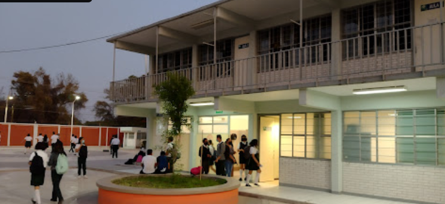

CONALEP León II
Periodo: 2020 - 2023
Carrera: Profesional Técnico Bachiller en Informática
Descripción: Aprendí varios lenguajes de programación (Python, HTML, CSS, aplicaciones móviles, redes). Obtuve una sólida base en informática y tecnología.